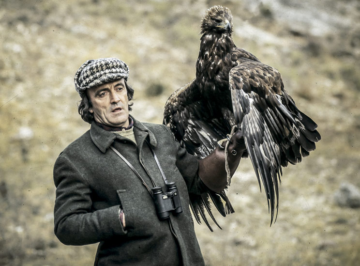

FÉLIX RODRÍGUEZ DE LA FUENTE
¿QUIÉN ERA?

Félix Samuel Rodríguez de la Fuente (Poza de la Sal, Burgos, 14 de marzo de 1928 -Shaktoolik, Alaska, 14 de marzo de 1980) fue un naturalista y divulgador ambientalista español, defensor de la naturaleza, y realizador de documentales para radio y televisión, destacando entre ellos la exitosa e influyente serie El hombre y la Tierra (1974-1980). Licenciado en Medicina por la Facultad de Medicina de Valladolid y autodidacta en biología, fue un personaje polifacético de gran carisma cuya influencia ha perdurado a pesar del paso de los años. Su saber abarcó campos como la cetrería y la etología, destacando en el estudio y convivencia con lobos. Casado con Marcelle Geneviève Parmentier Lepied.4
Ejerció además como expedicionario, guía de safaris fotográficos en África, conferenciante y escritor. Contribuyó en gran medida a la concienciación ecológica de España en una época en la que el país todavía no contaba con un movimiento de defensa de la naturaleza. Su repercusión no fue solo a nivel nacional sino también internacional y se calcula que sus series de televisión, emitidas en numerosos países y plenamente vigentes hoy en día, han sido vistas por varios cientos de millones de personas. Murió en Alaska, junto con dos colaboradores y el piloto al accidentarse la aeronave que los transportaba mientras hacían una filmación aérea para uno de sus documentales.